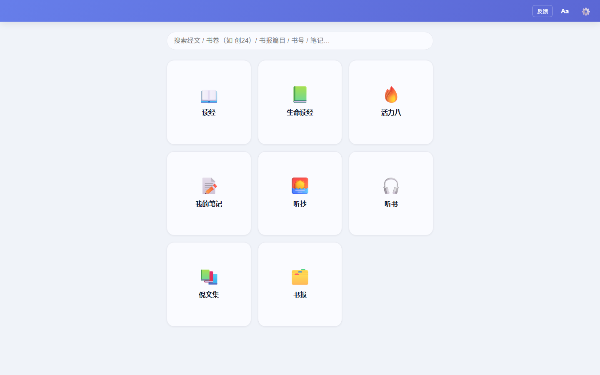

2026-11-03 · 评审对象：v1.0.69 全应用 UI（基于真实截图 + style.css 实测数据）· 建议阅读 8 分钟
一句话：骨架优秀、内容扎实，但视觉打磨与几个关键阅读工效问题拉低了整体水准。
做得好的：信息架构清晰（首页 + 六模块 + 统一抽屉）；排版控制力罕见地强（字号/行距可调且全正文生效）；断点有真实依据（900/1200）；错误恢复细节到位（重试保留播放位置、复制带出处）；书号直达（「创24」）是超出同类产品的效率设计。
拖后腿的：① 没有深色主题——阅读类应用的 bedtime 场景硬伤；② 宽屏行长失控与中档屏正文过窄——两个相反方向上的阅读工效漏洞；③ classic 主题 5 处对比度不达标（已实测）；④ 首页 emoji 图标与缺失的品牌身份，让第一印象停在「模板感」。
P0工作量：中（1 个主题覆盖块 + 标注透明度调整）
读经应用的高频场景之一是睡前与弱光环境。现有 indigo / paper / minimal 三主题全部是浅色，而 token 体系已经把颜色收敛到 :root——新增一个 [data-theme=dark] 覆盖块就能落地，成本远低于用户价值。唯一要专项处理的是五色标注：暗底上 50% 透明度会让正文对比度跌到 3.2:1（不达标），需降到 ~25% 或改下划线式。
1起初，神创造诸天与地，
2而地变为荒废空虚，渊面黑暗。
3神说，要有光，就有了光。
4神看光是好的，就把光暗分开了。
1起初，神创造诸天与地，
2而地变为荒废空虚，渊面黑暗。
3神说，要有光，就有了光。
4神看光是好的，就把光暗分开了。
P0工作量：小（一条 max-width）
正文列是 1fr 且无 max-width：1440px 屏约 33 字/行尚可，但 1920px 屏达到 55+ 字/行——远超中文舒适阅读区（30–40 字）。眼睛回行距离过长，是长时阅读疲劳的直接来源。修法极便宜：正文内容限宽 40em 居中，剩余留白还给页面。
1 起初，神创造诸天与地。2 而地变为荒废空虚，渊面黑暗。3 神说，要有光，就有了光。4 神看光是好的，就把光暗分开了。5 神称光为昼，称暗为夜。有晚上，有早晨，这是第一日。6 神说，诸水之间要有广阔的空间，将水分为上下。7 神就造出天空，将天空以下的水与天空以上的水分开。事就这样成了。
P0工作量：小（渐变两端加深，方案已量化）
顶栏是每屏常驻的最高频阅读面，白字对 #667EEA 只有 3.66:1（正文门槛 4.5）。深端 4.84 达标——问题只在浅端。提案：渐变改为 #5B67D4 → #4651B8，两端分别为 4.84 / 6.71，全达标；顺带消除「紫蓝渐变」的模板感（indigo 主题的纯色 5.21 也证明此方向成立）。classic 基线纪律的取舍见文末路线图。
P0工作量：小（停靠默认态按断点调整）
≥1200px 抽屉停靠常驻（340px）+ 研读列（480px）：在 1280×800——最常见的笔记本档——正文只剩 460px ≈ 25 字/行；1200px 时仅 380px。最主流的屏幕上，核心阅读区反而最窄。提案：停靠阈值抬到 1400px（覆盖 1440 档屏的 innerWidth≈1423；1200–1399 抽屉默认收起，☰ 呼出浮层），正文立刻拿回 340px；已有收起动画与浮层机制，零新组件。
P1工作量：小（切换默认渲染 + 网格 3→4 列）
经典主题的合集块用系统 emoji（📖📚🔥📝🎧）：多彩、风格不统一、跨平台形状不可控，与克制的靛蓝体系冲突——这是「模板感」的最大来源。而线性 SVG 图标集（34px、stroke=currentColor、跟主题）已经为其他主题做好了，只差把默认渲染换过来。另外 1440px 下 3 列网格造成 8 块 3+3+2 的参差收尾，建议桌面 4 列（4+4），并补上每块的统计副文案增强信息量。
P1工作量：小
首页顶栏左侧整段空白（见下方截图），应用名只存在于 splash——用户截图分享、多窗口切换时没有身份锚点。同时「反馈」以描边按钮占据顶栏正位，但它是低频动作。提案：左侧加字标「读经研读笔记」，「反馈」降级收进 ⚙ 菜单；顶栏右簇只留 Aa + ⚙。

P1工作量：中（全局组件 + 播放状态桥接）
音频在离开听书模块后继续播放（断点续听已做），但界面里没有任何常驻控制：用户边听边读经时，想暂停或跳一段必须退回暖书模块。提案：非听书界面底部常驻迷你播放条（标题 + 播放/暂停 + 细进度），点标题回听书模块。这是「边听边读」场景的最后一块拼图。
1 起初，神创造诸天与地。2 而地变为荒废空虚，渊面黑暗。3 神说，要有光，就有了光。
P1工作量：中
现状工具条弹出后往往盖住所选文字，用户确认不了自己在标哪句；色点视觉 Ø20 也低于 24px 触摸门槛。v2 提案：① 条上方加选中文字预览 chip（截断省略）；② 色点 19px 视觉 + 24px 命中；③ 上次使用的颜色排首位并加环（高频用户 80% 只用 1–2 色）；④ 补「删除」入口（现状改色/改笔记/删除分离但删除要二次进菜单）。
P2工作量：小（Aa 面板加一行 + 一个 token）
经文长读场景里，衬线（宋/楷）是许多读者的偏好——同为读经工具的头部产品均提供字体选择。实现：Aa 面板新增「正文字体：黑体 / 宋体」，落到新 token --reading-font，与 scale/lh 同为本地偏好。试读感受见下方切换。
1 起初，神创造诸天与地。2 而地变为荒废空虚，渊面黑暗。3 神说，要有光，就有了光。4 神看光是好的，就把光暗分开了。
以下已在与本次同批交付的无障碍审计与状态规范中有量化方案，列入路线图直接执行即可。
① classic 其余 3 处对比度欠账（vnum/链接 3.54 → brand-dark 4.84；fn-ref 3.42；见 docs/04 §1.2）；② .popup-btn.danger 白字 3.96 → --danger-deep 6.47；③ .sync-st-on 3.19 → --success-deep 7.13；④ Toast 悬停暂停（WCAG 2.2.1）；⑤ 重试指数退避；⑥ 空态统一带 CTA；⑦ 抽屉 0 结果回显查询词（docs/05）。
按「价值/成本比」分三批；均不触碰标注语义与数据契约。
| 批次 | 内容 | 工作量 | 纪律注意 |
|---|---|---|---|
| 第一批 快速见效 |
F2 行长 40em 上限 · F3 顶栏渐变加深 · F4 停靠阈值抬到 1400 · vnum/链接换 brand-dark · popup-btn.danger / sync-st-on 换 deep 色 | 半天 | classic 基线纪律：渐变加深与字色属主题覆盖块，建议作为「经典主题 v1.1 一次性修」整体评审后落，不动五色与布局契约 |
| 第二批 体验跃升 |
F1 深色主题（token 覆盖块 + 标注 25% 透明度 + 主题列表新增项）· F7 迷你播放条 | 1–2 天 | 新主题走 [data-theme=dark]；播放桥接复用现有播放状态，不新建播放器 |
| 第三批 打磨 |
F5 首页线性图标 + 4 列网格 + 副文案 · F8 标注工具条 v2 · F9 经文字体选项 · Toast 悬停暂停 · 重试退避 | 1 天 | 图标切换保留 emoji 为可选偏好；标注工具条改动须回归划线定位测试 |